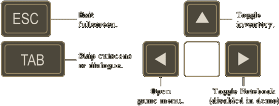

Lassie Games Presents "What Makes You Tick: A Stitch in Time"



Check out your inventory ... you have a photograph from Nigel’s father, his will, and his insignia ring.
Explore the harbor ... walk to the left. Go through the archway beyond the fountain.
Meet Lowell Cain and learn about recent events within Ravenhollow ... the confrontation ends with Nigel getting knocked out and locked up in a boathouse.
Have a look around ... touch the tarpaulin to reveal mystery girl; she gives you a fish.
The boathouse door’s hinges are exposed ... maybe you can unscrew them.
Look out the boathouse window ... the sailor has lost his mind, but maybe his dog can help.
The dog is too deaf to hear your calls ... try to lure him closer using other senses.
Examine the rain barrel next to the boathouse window ... there’s a slingshot floating in it.
Try luring the dog closer with your fish ... load the fish into the slingshot, and then launch it out the roof hatch.
The dog is still out of reach ... but he is at least closer; try whistling to him now!
The dog came to the window ... borrow the dog’s collar tag and use it to unscrew the door hinges.
Talk to the bridge guard ... you need a pass to enter the village.
Talk to Amayi, the ship captain ... she'll give you a village pass in exchange for her confiscated ship log.
Talk to Wavetamer, the harbormaster... he mentions that confiscated goods are locked up in the boathouse chest.
Find the key to the boathouse chest ... Wavetamer has a chest key hidden in the port authority office.
Get the boathouse chest key ... Wavetamer will sneak you into the port authority office after dark.
Pass some time until dark ... retrieve Wavetamer's rowboat from the boathouse so that you can go fishing!
Wavetamer gives you a winch handle ... attach it to the winch box in the boathouse, then lower the rowboat.
This boat is not sea-worthy ... you'll need to patch it up.
Have a look at the wrecked boat outside the boathouse ... it has an old steel patch riveted to its hull.
The metal patch needs to be pried off ... there’s a letter-opener in the port authority office that will do the trick.
You have the steel patch. Is it enough? ... there's also a bucket of tar lying nearby.
Now you can repair the rowboat ... cover the steel patch with tar and affix it to the rowboat.
All that’s left is to get the rowboat out of the boathouse ... push the rowboat like a battering ram into the sea doors.
Use the rowboat to row over to Wavetamer... time to go fishing!
It’s dark when you return from fishing ... Wavetamer gives you a key to sneak into the port authority office.
Find the boathouse chest key ... it's hidden in the ship-in-a-bottle next to the desk.
The sleeping guard’s hand is on the bottle ... change the radio channel to soothing music so that he gets comfortable.
The bottle neck is too narrow to reach into ... you’ll need something to slide in and hook the key with.
Check the bulletin board at the end of the pier ... take the leaflet and the fishing hook used to pin it up.
Pull the key from the bottle ... hook the key using the fishing hook.
Unlock the boathouse chest ... use the chest key, then take the ship log and box of Pretzeljax inside.
Claim your village pass ... give the ship log to Captain Amayi in exchange for her village pass.
Show your village pass to the bridge guard ... welcome to the village!
Lawyer Lionstone says he'll have some information ready in the morning ... sleep the night on the straw in the inn. Lionstone reveals that all nine founding members of the Smith Institute are shareholders of Nigel’s father’s estate.
Therefore, Nigel will need to validate his father’s will with the insignia ring seals of the nine Smith Institute members.
Talk to the kids by the treehouse ... they challenge you to retrieve their trophy from the castle gate.
Find the trophy at the castle ... it contains a ring, but the guard won't let you anywhere near it.
The castle guard is spooked by those eagle statues ... you’ll need to make an eagle disguise.
Explore Mr. Mandelbaum’s mask shop ... Mandelbaum gives you a crayon to draw a mask design.
Find something to draw on ... combine the crayon with your fishing club leaflet.
Draw a mask design ... try drawing one of the eagle statues above the castle gate.
Give your mask design to Mr. Mandelbaum ... sleep on the straw in the inn. Your mask will be ready in the morning.
The eagle mask doesn't hide your clothes ... you’ll need a full costume.
Search for some feathers ... there’s a bird nest above the harbor storehouse.
The feathers are too high to reach ... find rocks near McManus’ boat, then shoot them at the nest with your slingshot.
You have feathers, but you can't just stick them to your body ... you’ll need a cloak to glue them on.
Explore Mr. Caro's antique shop ... there’s an old cloak for sale.
You’ll need local currency to buy the cloak ... search the fountains for coins!
There's a fountain with a clogged drain near the treehouse ... use your fishing hook to pull out some old coins.
Now you can buy the cloak ... tar the cloak and cover it in feathers, then combine it with the mask.
You now have a convincing eagle disguise ... BUT– it will be even more scary at night.
Don your costume at night to spook the guard ... take the trophy from the gate and return it to the kids.
The kids reward you with the Zygmunt ring!
See what’s happening down in the harbor ... is that a ring on Jacabo's dice table?
Jacabo will gamble for the ring ... you'll need something to wager.
You could try money ... get 300 points in the fishing game, then sell your prize to Captain Amayi.
Bet a gold coin for Jacabo's ring ... his dice are weighted!
These coins aren't getting much done ... try wagering something else. Jacabo says he likes figurines and shiny things.
Browse the antique shop ... there's a shiny metal angel statuette that Mr. Caro gives for free!
You only have one angel statuette, so you’d better make it count ... try rigging the game.
Jacobo’s dice are apparently weighted with metal ... perhaps a magnet would change your odds.
There's a toy magnet prize in your box of Pretzeljax ... use it to magnetize the angel statuette.
Wager your magnetized statuette and you’ve got the Coppelius ring!
Work on getting into your father's house ... the doggy door would be a prime point of entry.
The doggy door has been boarded up ... you'll need to remove those boards.
If only you had a crowbar ... you could try the old metal rod in front of the mill.
The rod is too twisted to pry the boards off ... maybe someone could bend it back into shape?
Mr. Forkbeard at the harbor says he’s pretty strong ... give him the metal rod to prove it!
Remove the board on the door with your crowbar ... now you just need someone who can fit through the doggy door.
One of those kids could fit through the doggy door ... but you'll need to obtain Zygmunt’s ring to join their club. The kid opens the door.
Now you can explore your father's house ... his desk is locked.
There’s a socket in the base of the desk ... try pressing the Trelawney insignia ring into it.
There’s a radio inside the desk with a broken tube ... maybe you could get a replacement tube from another radio?
There’s an old radio in the inn ... turn it off and convince Webb to give you his spare radio tube.
Replace Trelawney’s radio tube, then check the frequency ... a voice says he’ll be at the old mill in the morning.
Uncle Slappy, “The Zeppelin Man”, is on his way ... sleep in the inn and then head for the old mill.
There's an insignia ring wedged in the mill wall ... it belonged to Uncle Slappy's brother.
You can't pull or pry the ring from the wall ... perhaps you could harness the mill shaft’s torque?
Explore the campfire near the woods; take the kettle and hook ... install the hook on the mill shaft.
Find Lars Sigmundson on the harbor pier at night ... he'll trade you his fishing wire for some bait.
Where can one find fishing bait? ... read the sign about night crawlers by the bait shop.
You need night crawlers ... check the mud puddle near the campfire at night.
You’ll need something to lure the night crawlers ... talk to Mrs. Caro, the greengrocer, in the village square.
Mrs. Caro wants a red snapper ... catch one in the fishing game.
Trade Mrs. Caro the red snapper for an apple ... lure the night crawlers out with the apple.
Trade the worm-filled apple to Lars Sigmundson for his wire fishing leader.
Attach the wire to the insignia ring ... connect the other end of the wire to the hook on the mill shaft.
The Steven LeMue LaFayette ring pulls free!
Talk to Uncle Slappy ... he says that he put his insignia ring on a flight-test dummy for luck.
Search for the dummy ... you’ll find it in a crashed balloon back in the woods.
You’ll need to eject the dummy out of the balloon ... there’s a universal remote for Smith Institute devices in the mill.
The remote has no batteries ... open the toy submarine found in your father’s house for a new pair.
Trigger the balloon’s ejection seat with the remote ... the dummy and ring are revealed. Yikes!
The dummy is dangling too high up to reach the ring ... you’ll need to remove the ring from the ground.
Talk to the entertainers by the campfire ... they'll give you some cherry bombs from their old performance act.
Shoot a cherry bomb at the dummy’s ring with your slingshot ... the bomb just bounces off.
Maybe you could make the bombs stick to their target? ... try covering the bombs in tar, then shoot at the ring.
You have the Henry LeMue LaFayette ring at the cost of the dummy’s hand!
There are two star-struck lovers outside at night ... Cecily is outside of the antique shop, Stig is at the bus stop.
Stig has his grandfather's insignia ring ... once he knows Cecily will marry him, he’ll need a proper engagement ring.
Talk to Cecily ... she is waiting for a sign from the heavens to confirm that her love for Stig is true.
Cecily needs a sign from the heavens to convince her to marry Stig.
Try changing the way Cecily sees the sky ... ask Captain Amayi during the day about her telescope.
Captain Amayi will trade her telescope for a map of the Malabo coastline ... look around the port authority office.
There’s a globe in the port authority office ... spin the globe to reveal the Malabo coast.
You can’t carry away the entire globe ... maybe you could peel the map from it?
The map is glued firmly onto the globe ... try steaming the paper off.
Take the old kettle hanging near the campfire ... fill it with water from any source (fountains).
Boil the kettle of water ... there’s a hotplate on the potbelly stove in the inn.
Now you have a kettle of boiling water ... use it to steam the map off from the globe.
Trade the map for Captain Amayi's telescope.
Now the telescope just needs a sign ... try filling it with stars – or fireflies.
There are fireflies near the woods at night ... you’ll need a net to catch them.
Search for a net ... there’s a windsock by the old mill that is at least the right shape.
The windsock tail needs to be closed off ... catch a boot while fishing and remove the shoelace.
Use your net to catch fireflies ... Nigel will store them in an old glass bottle.
You have a bottle of fireflies and a telescope ... combine them to make a heavenly sign for Cecily.
Cecily gives you a love note for Stig ... be a good messenger and pass it along.
Stig needs a proper engagement ring for Cecily ... look in the window of the antique shop.
That diamond ring is expensive ... but Mr. Caro may trade it for an equally valuable piece of Ravenhollow history.
What could match the diamond ring’s value? ... Mr. Caro mentions a statue that used to stand in the village square.
Where is the statue? ... Mr. Caro says that the castle guys hauled it past his shop on their way out of town with it.
Okay, so where is the statue? ... it was heavy enough that they probably didn’t make it far. Check in the river.
There’s a bunch of leaves caught on something in the river ... try to clear them to see what’s down there.
A duck sits by the river during the day ... toss a Pretzeljax onto the leaves for the duck. He’ll disperse them.
The statue is definitely in the river ... do you know someone with a vehicle capable of lifting it out?
How about Uncle Slappy’s zeppelin? ... ask him to help you pull the statue out of the river.
Uncle Slappy flies the statue to the antique shop ... go there to claim the diamond ring!
Trade the diamond ring to Stig for the Sigmundson insignia ring!
Examine the golden bird statue in Trelawney's house ... there are two oval-shaped holes in its base.
Find something to fill those holes ... Uncle Slappy gave you a locket from your father.
The locket would work if the two halves weren’t connected ... remove the pin connecting the two locket halves.
You’ll need a tool to separate the locket halves ... find tweezers in the first aid box on the back of the inn door.
Place the locket halves in the base of the golden bird statue ... a secret passage into the Smith Institute is revealed!
The Smith Institute has a locked safe ... maybe you can break it.
scend into the catwalks to have a look at that big telescope ... the bolt on the telescope crosspiece is loose.
Unscrew the bolt on the telescope crosspiece ... a wrench can be found in Trelawney’s house.
Try pushing the telescope to adjust its position ... during the day you’ll see a beam of light appear.
That beam of light is pointing directly at the safe ... try to intensify the light beam.
A lens would focus the light beam ... use the lens from Captain Amayi’s telescope.
The laser melts the safe lock. Open the envelope inside to find the Smith ring!
The antique dealer has a wooden model of Northwest Castle ... it was made by Von Sternberg as a jewelry box.
Access Caro’s history archive to examine the wooden model ... ask Caro about his history archive.
Caro will let Nigel look through his archives after catching three specimens of Ravenhollow wildlife:
Catch the specimens using your net ... Don’t have a net? Find the mill windsock, then go fishing for a shoelace.
Mr. Caro grants Nigel access to his history archive after receiving all specimens.
That castle model looks interesting ... Mr. Caro mentions that it contains hidden compartments.
Open the castle model ... search for some kind of latch.
Rummage through the archive’s filing cabinets ... you’ll find a diagram of the model’s missing clock hands.
A talented woodworker could craft these clock hands ... Mr. Mandelbaum perhaps?
Mr. Mandelbaum will make the clock hands. In the meantime, he asks Nigel to fetch his cat’s lost ball.
Locate the lost rubber ball ... it fell down the well outside the antique shop.
Descend into the underground passage between Trelawney's house and the Smith Institute.
There’s a leaking pipe ... perhaps you could patch it?
You’ll need raw materials for a patch ... go fishing, catch the boot, and unlace it into scrap leather.
How about scrap leather as a patch? ... sure, just cover it with tar and patch up that hole in the pipe.
Above ground, the well is now full of water ... the cat’s ball is floating on the surface.
Give the rubber ball to Mr. Mandelbaum ... he’s just finished crafting the clock hands.
Attach the clock hands to the castle model ... now you just need to know what time to set on the clock.
There’s a roll of slides in the Smith Institute safe ... one of the slides mentions the correct time.
Set the time on the model clock to acquire Von Sternberg’s ring!
Once you have 8 rings, head over to Uncle Slappy's mill ... his zeppelin has been stolen.
Uncle Slappy gives you an envelope from the Castle containing Vincent Goodchild’s insignia ring. You now have all 9 rings; go to see Lawyer Lionstone!
Mr. Mandelbaum has been brainwashed by the castle guards ... these atrocities must stop!
Return to the inn ... Mr. Caro gives you a key and a cryptic poem to access a secret entrance into the castle.
Find the castle’s secret entrance ... Mr. Caro says that it’s somewhere near the old stonecutter’s quarry in the woods.
You’ll need to uncover that overgrown archway in the woods... conveniently, you have a hungry locust.
Unlock the stonecutter’s quarry ... use Mr. Caro’s key to open the rusty gate.
There are star-shaped symbols on the statues ... the statues match the descriptions in Mr. Caro’s poem verses.
The star-shaped symbols can be pressed ... they’ll need to be activated in the same order as the poem verses.
The poem says to start behind a rose ... there’s a rose on the base of one statue. You’ll need to remove it.
There's a mallet and a chisel lying about ... pick them up.
The chisel is firmly embedded in a log ... try to weaken the wood, then pull it free.
Burn the log to weaken the wood ... there’s a glowing ember back at the campfire.
The ember isn’t hot enough to ignite the log directly ... try adding some lighter-fluid. Webb can help with that.
Burden Webb with your troubles ... eventually he’ll give you a bottle of strong whiskey to shut you up.
You have highly-flammable whiskey ... pour it over the log and ignite it with the ember, then take the chisel.
Now you have a chisel and mallet ... chip away the rose plate to reveal another star symbol behind it.
Read the cryptic poem and press the stars in the specified order to open the secret passage.
Explore the castle cellar ... have a look at that big crate of fish.
Meet Dr. Coppelius' assistant, Nathan ... proceed together up to the left-hand tower.
The baron is feeble ... even so, have him your sign your father’s will. The baron follows up with a “help me” note.
There’s a guard blocking the way forward ... you’ll need to get rid of him.
Try ringing the bell ... the guard checks on the baron, but then ignores him again.
Dump the baron’s tea ... try emptying the teacup into a pot of ivy, then replace the cup and ring the bell again.
The guard doesn't notice the empty cup ... place the baron’s “help me” note next to the teacup, then ring the bell again.
The guard resigns himself to refilling the baron’s tea and abandons his post. Continue on to the castle tower.
Our heros arrive at the site of an old Time Rift prototype. They must rebuild it to retrieve Nigel’s photograph. Look at the component list that Coppelius gives you. You’ll need to find:
Revisit the harbor ... Jacabo has a set of cut-glass tiki statues that would work as crystal prisms.
Talk to Jacabo. He’s lost his lucky dice ... he says a castle guard stole them. Maybe you can recover them?
Visit the bus stop outside the Smith Institute ... there’s a castle guard waiting with a strongbox of loot from the village.
Try grabbing the guard’s strongbox. He won't let you ... you’ll need to swap in a decoy while he’s not looking.
Revisit the castle cellar ... the right half of the room is lost in darkness. Find a way to illuminate the area.
The performer in the village square is juggling unlit torches ... he’ll trade them for something more dangerous-looking.
Mr. Mandelbaum has a set of knives ... he’d probably let you borrow them if he wasn’t still brainwashed.
Revisit the castle tower ... pick up Vincent’s hypnosis device.
There must be a way to reverse the hypnosis device’s effects ... a Smith Institute scientist could probably help here.
Dr. Coppelius recalibrates the hypnosis device ... you can now restore Mr. Mandelbaum.
Mr. Mandelbaum has lost his cat, Mr. Boots ... the cat is on top of Dr. Trelawney’s house.
Try calling the cat down ... Mr. Boots is frightened. Perhaps you can lure him down with something?
Get Mr. Boot’s milk bowl from the mask shop ... fill it with milk from the bottle left on the antique shop’s doorstep.
Use the milk bowl to lure Mr. Boots down from the roof ... take him back to Mr. Mandelbaum.
Mr. Mandelbaum gives you the carving knives ... trade them to the juggler for his torches.
The torches need to be doused in lamp oil in order to ignite ... the lighthouse at the docks must use lamp oil.
The lighthouse is locked ... look around the village inn for the lighthouse key.
Webb is doing his customers’ laundry in the inn’s sink ... the lighthouse keeper’s shirt is in the sink.
The lighthouse keeper’s shirt has a key in the pocket ... use the key to open the lighthouse door.
There’s an oil funnel at the top of the lighthouse ... dip your torches in to douse them with oil.
Illuminate the castle cellar ... light the torches with Nathan’s lighter, then use them on the cellar’s darkness.
There’s all kinds of loot stashed back here... check out the small brown box on the shelf next to the walkway.
This box of papers looks a lot like the guard at the bus station’s strongbox ... it’s just missing the castle’s “eye” logo.
Go back to the lighthouse ... there’s a castle sticker at the top. Take it and stick it on the box of paperwork.
You have a decoy strongbox to hoodwink the guard at the bus station with... try swapping the boxes.
You can’t make the swap while the guard is watching ... you’ll have to create a diversion.
The guard still seems pretty jumpy after the eagle incident ... perhaps you can scare him again.
Return to the castle cellar ... there’s a strange module packed away in one of the crates.
The module is labelled as “LC-1984”. Sound familiar? ... have a look around the old Smith Institute building.
The module plugs into and powers up the Institute’s “LC” device ... “LC” stands for “Lightning Collector”.
Press the button on the activated “LC” device ... the device attracts a bolt of lightning!
If only you could activate the lightning collector while standing near that strongbox ... try the universal remote.
The guard only scares for a moment with each bolt of lightning ... so be quick about swapping the boxes!
The strongbox is locked tight ... you’ll need to break it open.
Do you have anything to smash the box with? ... when in doubt, try using gravity.
Throw the strongbox off the top of the lighthouse ... collect Jacabo’s lucky dice from the smashed remains below.
Trade Jacabo his lucky dice for the tiki statues ... give the crystal tiki statues to Coppelius.
You’re looking for two human-sized metallic plates ... or, two human-sized plates that you can make metallic.
Visit Dr. Trelawney’s house ... there’s a large painting hanging high up on the wall.
You can’t reach the painting ... you’ll need to extend your reach.
Cure McManus ... get the hypnosis device from the castle tower, then have Coppelius reverse its effects.
McManus gives you a gaff after being cured ... use the gaff to reach the painting in Trelawney’s house.
That's one human-sized plate ... you still need a second. This portrait looks like one of a pair.
Where did Cain’s men take the rest of Trelawney’s paintings? ... have another look in the castle cellar.
Push around the paintings at the back of the cellar storage area ... you’ll find a companion painting under a shroud.
You have two human-sized plates, but they’re not metallic ... there must be a way to cover them in metal.
Visit the village inn ... is that a roll of aluminium foil behind the bar? Wrap the two paintings in foil ... give the metallic plates to Dr. Coppelius.
Have a look around the mill ... there’s a stray propeller balanced on the edge of the cliff.
You can't reach the propeller ... go see McManus at the docks.
Cure McManus ... get the hypnosis device from the castle tower, then have Coppelius reverse its effects.
McManus gives you a gaff after being cured ... use the gaff to reach the propeller on the cliff.
You have the propeller ... give it to Dr. Coppelius.
Nora travels through the Time Rift prototype back to the boathouse ... look out the window.
Remember this scene? Didn’t the castle guard mysteriously get hit here? ... build a slingshot, then shoot at the guard.
There’s a forked stick floating in the water ... try catching it with that piece of string hanging on the wall.
The string alone won’t hook the stick ... you’ll need to attach a weight to the string.
There's something different about that big propeller ... didn't it have a piece of metal broken off it before?
Break a loose shard of metal from the propeller ... attach it to the string, then fish the stick out of the water.
The forks on the stick are a little long ... try cutting them down with the metal shard.
You started with a rubber band hair-tie ... cut the rubber band with the metal shard, then attach it to the forked stick.
You have a slingshot. Now you need some ammo ... there’s a shellfish clinging to one of the wooden posts.
Shoot the castle guard with the slingshot ... déjà vu, you get the photograph!
Our heros have arrived atop Mount Misery. They’ll need to draw off power to disrupt Vincent’s rift.
Restore the station’s power link ... look in that utility panel on the floor.
The power connector is broken ... you’ll need to replace it with a new one.
Venture outside into the snow ... explore the snowy plateau on the far right side of the mountaintop.
There’s an old walkway joist buried in the snow ... excavate it to see what else is buried in there.
Dig in the snow ... there was an old power connector buried with it.
The power connector is shot ... try to reconstruct it with better insulation.
Whoops, the hand rail on the station’s control booth broke off ... use it to insulate the frayed power connector.
You have an insulated power connector ... install it in the utility panel to restore the station’s power.
Anthony Trelawney? Alive? ... get the key for the station’s control booth from Trelawney.
Unlock the station control booth with Trelawney’s key ... examine the glowing control panel.
The control panel routes power around the station ... you need to divert power away from Vincent’s rift.
Reroute all power to flow through the train station ... the lightning attractors outside need to be toggled manually.
You need to flip the relay switches at the top of the two attractor towers outside.
The first attractor’s access lift has no power ... use the control panel to divert power from the train platform to the lift.
Use the lift to ascend the first lightning attractor tower ... toggle the power relay switch.
Use the station elevator to access the second attractor tower ... use the control panel to divert all power to the elevator.
Take the elevator up to Vincent's laboratory ... go outside to the lightning attractor tower.
Several walkway tiles have fallen out of the rickety catwalk ... you'll need to replace them.
Return to the snowy plateau below ... there's an old walkway tile frozen into the snow.
The walkway tile needs to be melted from the ice ... look around the train platform for something hot.
There’s a crate of self-heating noodle rations on the train platform ... take a noodle cup and activate it.
The noodles are steamy hot ... pour them on the tile to melt it from the ice.
A single tile isn’t enough to bridge the gap in the walkway ... you'll need another tile.
The first tile left an impression of itself in the snow ... perhaps you can mold a copy?
Make an ice replica ... you’ll need some water to freeze in the mold.
Try melting some snow ... fill your milk bottle with snow from the joist dig, then melt it with your lighter.
Now you have a bottle of water ... pour the water into the tile impression to cast an ice tile.
The two tiles close the gap in the walkway ... access the attractor tower and toggle the second switch!
All power is being routed through the train station now ... use the control panel to activate all station devices.
The station is drawing too much power away from Vincent’s experiment ... Vincent’s rift is dangerously unstable.
Go back upstairs to confront Vincent ... the end.